|
Assistant Professor State Key Laboratory of Software Development Environment SCSE, Beihang University, Beijing, China
He received the Ph.D. degree in 2021 from Beihang University, supervised by Prof. Wei Li
and Prof. Xianglong Liu.
Before that, He obtained the M.Sc and B.Sc degree from Beihang University at 2016 and 2013, respectively,
where he was supervised by Prof. Wei Li.
In his Ph.D study, during 2021, he was a visiting student at UC Berkeley, supervised by Prof. Dawn Song.
During 2020, he was a visiting student at the University of Sydney, supervised by Prof. Dacheng Tao.
In 2019, he interned at AI Lab at Tencent supported by Tecent Rhino-Bird Elite Program, supervised by Prof. Liwei Wang. He serves as a reviewer for the top conferences and journals such as
CVPR, ICML, ICCV, ECCV, NeurIPS, ICLR, AAAI, TPAMI, IJCV, TIP, etc.
Google Scholar / Github / dblp |
|
My research interests include some sub-fields of Computer Vision and Deep Learning:
|
[Call for Papers] I am serving as the Guest Editor on Practical Deep Learning in the Wild at Pattern Recognition (JCR Q1). Please submit your papers! [Workshop@CVPR2023] I am co-organizing the 3rd Workshop of Adversarial Machine Learning on Computer Vision: Art of Robustness on CVPR 2023. Please submit your papers and participate the challenge to win prizes! [Workshop@AAAI2023] I am co-organizing the 2nd International Workshop on Practical Deep Learning in the Wild on AAAI 2023. Please submit your papers and participate the challenge to win $17K prizes! [2023.02] One paper accepted by USENIX Security Symposium 2023. [2023.02] One paper accepted by Sixth Conference on Machine Learning and Systems (MLSys 2023). [2023.01] Two papers accepted by Pattern Recognition and 智能安全. [2022.12] Two papers accepted by IEEE TMM and 计算机学报 (Chinese Journal of Computers, CCF-A). [2022.11] One paper accepted by AAAI 2023. [2022.08] One paper accepted by ACM CCS 2022. [2022.07] One paper accepted by IEEE CYB. [2022.06] Three papers accepted by ACM Multimedia 2022. [2022.03] Two papers accepted by CVPR 2022. [2022.01] One paper accepted by ICLR 2022. [2021.10] Two papers accepted by IEEE TIP. [2021.09] We released the first comprehensive Robustness investigation benchmark (RobustART) on large-scale dataset ImageNet regarding ARchitectural design (1000+) and Training techniques (10+). [2021.08] One paper accepted by IEEE TNNLS. [2021.08] One paper accepted by ACM Multimedia 2021. |
Conference Papers
| 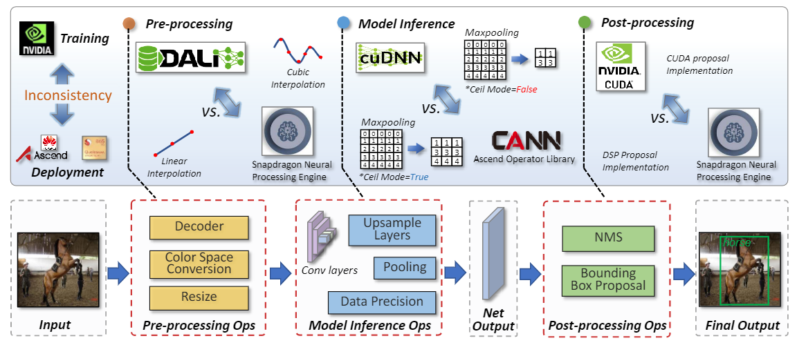 |
This paper for the first time introduces SysNoise, a frequently occurred but often overlooked noise in the deep learning training-deployment cycle. In particular, SysNoise happens when the source training system switches to a disparate target system in deployments, where various tiny system mismatch adds up to a non-negligible difference. |
| 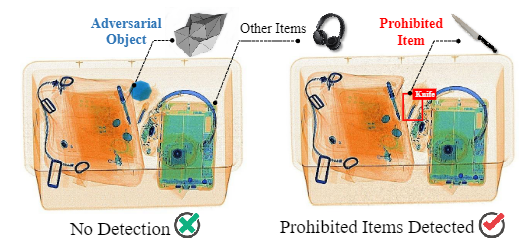 |
This paper takes the first step toward the study of physical adversarial attacks targeted at X-ray prohibited item detection, and reveals the serious threats posed by such attacks in this safety-critical scenario. |
| 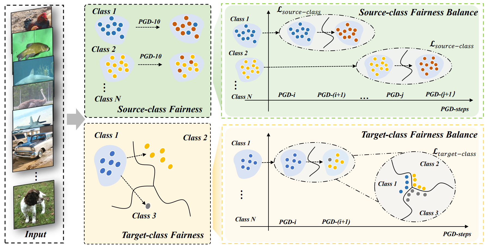 |
This paper proposes Balance Adversarial Training (BAT) to address the robust fairness problem of adversarial training, which is known as the severe disparity of accuracy and robustness between different classes for the adversarially-trained models. |
| 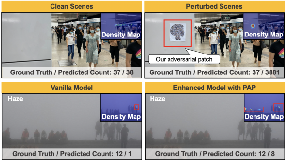 |
This paper proposes the Perceptual Adversarial Patch (PAP) generation to attack crowd counting models; in addition, we surprisingly found that our adversarial patches could also be utilized to benefit the performance of vanilla models for alleviating several challenges including cross datasets and complex backgrounds. |
| 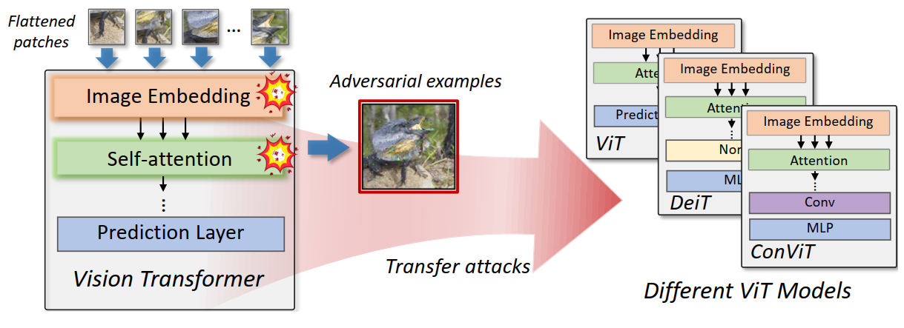 |
We propose an Architecture-oriented Transferable Attacking (ATA) framework to generate transferable adversarial examples for ViTs by activating the uncertain attention and perturbing the sensitive embedding. |
| 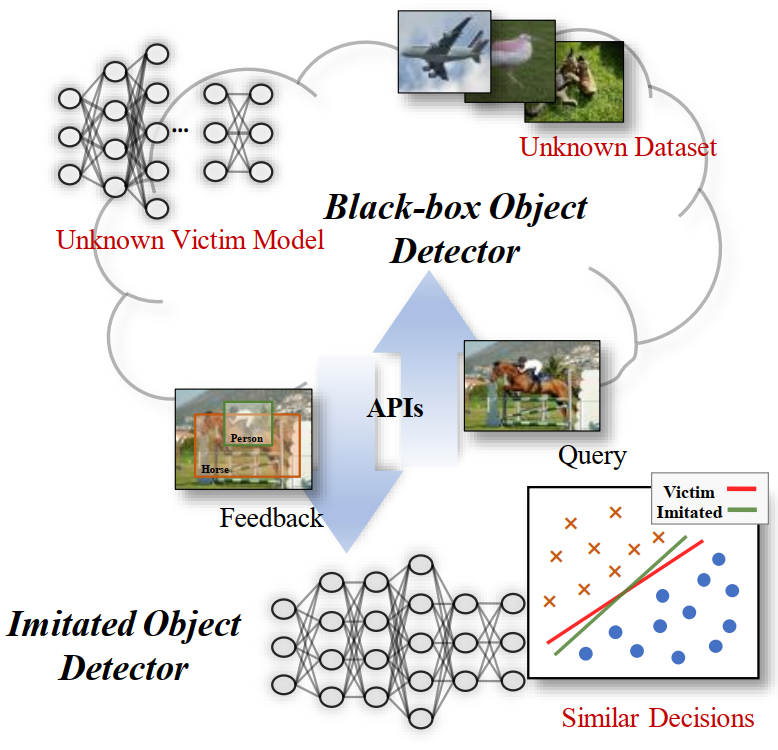 |
We for the first time reveal that black-box victim object detectors can be easily replicated without knowing the model structure and training data. |
 |
We propose the first X-ray few-shot object detection dataset on the typical industrial X-ray security inspection scenario. |
| 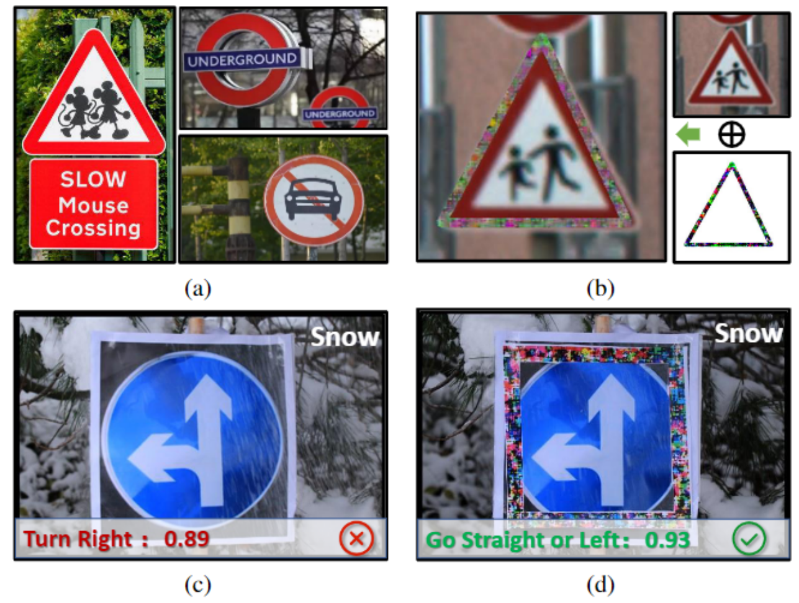 |
We generate defensive patches to help building robust recognition systems in practice against noises by simply sticking them on the target object. |
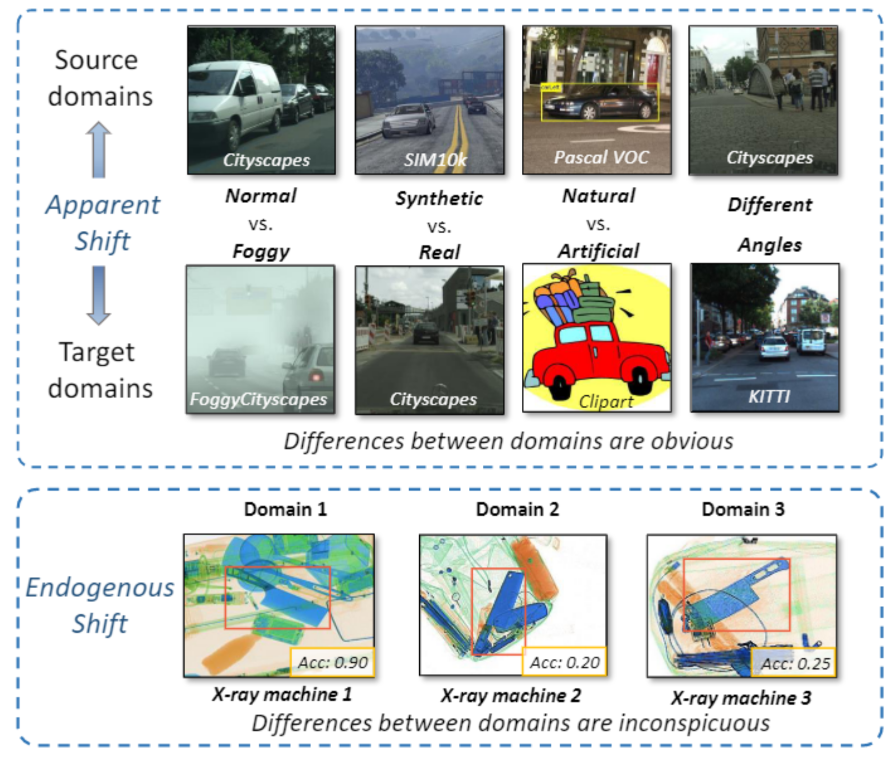 |
This paper proposes Endogenous Domain Shift that measures the noises caused by different X-ray machine types with different hardware parameters, which can severely harm the cross-domain detection robustness. |
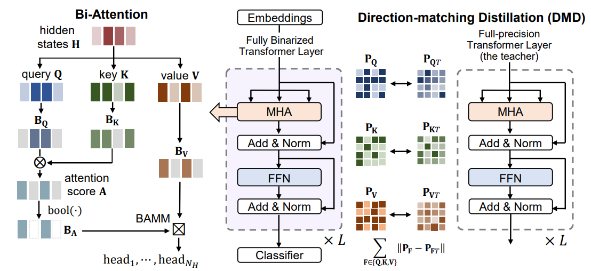 |
In this paper, we propose BiBERT, an accurate fully binarized BERT to eliminate the performance bottlenecks for large pre-trained BERT binarization. |
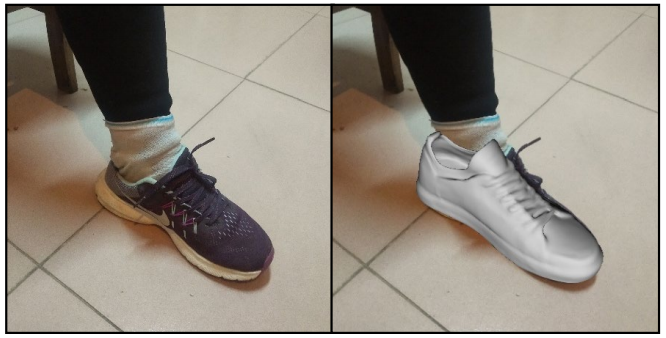 |
We propose a real-time augmented reality virtual shoe try-on system for smartphones, namely ARShoe. The system has been used in JD App. |
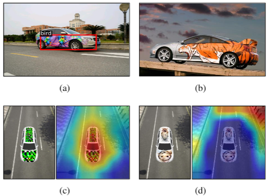 |
We propose the Dual Attention Suppression (DAS) attack to generate visually-natural physical adversarial camouflages with strong transferability by suppressing both model and human attention. |
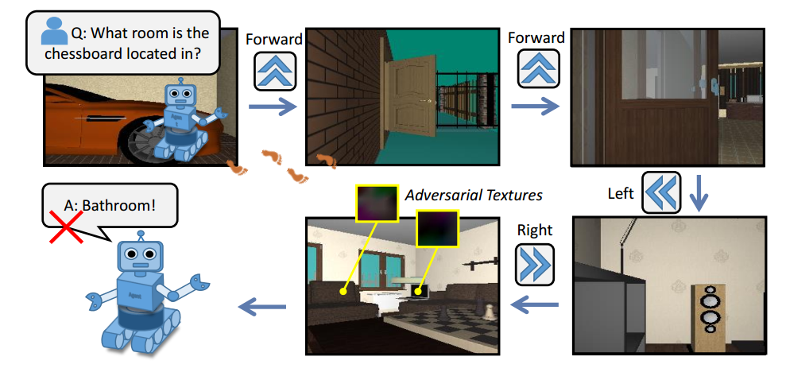 |
We take the first step to study adversarial attacks for embodied agents. |
We propose a bias-based framework to generate class-agnostic universal adversarial patches with strong generalization ability, which exploits both the perceptual and semantic bias of models. |
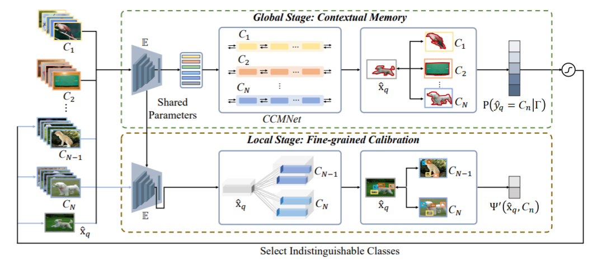 |
To improve the generalization ability of few-shot learning, we propose an inverted pyramid network that intimates the human’s coarse-to-fine cognition paradigm. |
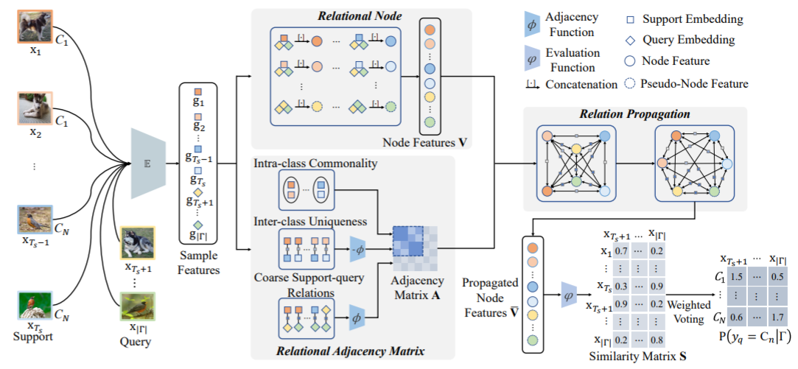 |
For few-shot learning task, we propose a transductive relation-propagation graph neural network to explicitly model and propagate such relations across support-query pairs. |
 |
To address the image inpainting problem, we propose a coarse-to-fine framework to restore semantically reasonable and visually realistic images, which consists region-wise convolutions to locally deal with the different types of regions and non-local operations to globally model the correlation among different regions. |
We propose a PS-GAN framework to generate adversarial patches to attack auto-driving systems in the physical world. |
Journal Papers
| 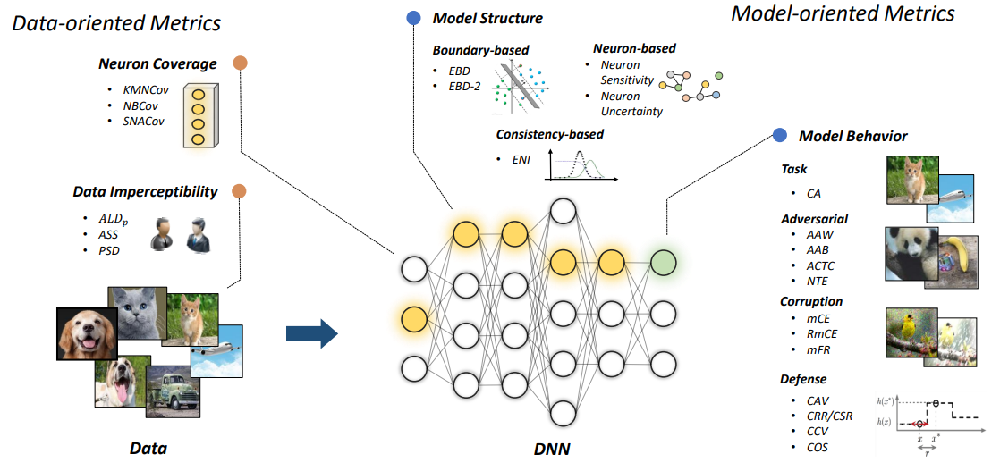 |
This paper establishes a model robustness evaluation framework containing 23 comprehensive and rigorous metrics, which consider two key perspectives of adversarial learning (i.e., data and model). |
 |
To better understand and further promote the development of deep reinforcement learning, this paper provides a comprehensive and systematic survey on the research development of adversarial attacks and defenses in the deep reinforcement learning area. |
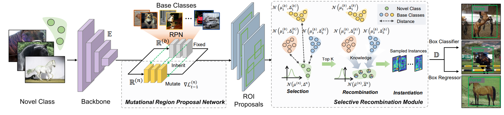 |
This paper presents a simple yet effective few-shot object detection framework referred to as Temporal Speciation Network (TeSNet) with an evolving training, which improves the diversity and ratonality of positive proposal generation. |
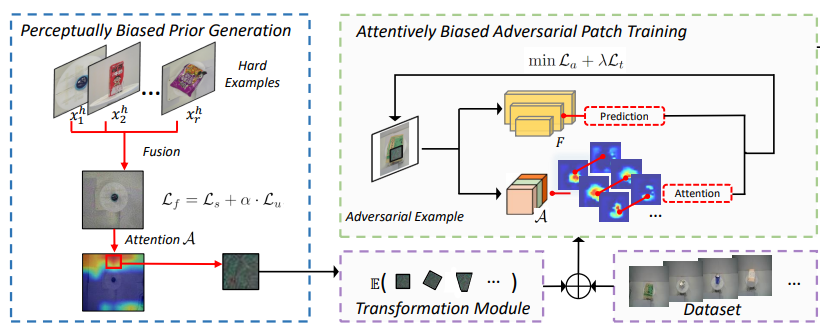 |
We propose a bias-based framework to generate universal adversarial patches with strong generalization ability, which exploits the perceptual bias and attentional bias to improve the attacking ability. |
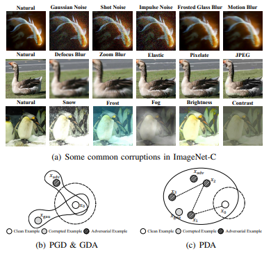 |
We propose a simple yet effective method, named Progressive Diversified Augmentation (PDA), which improves the robustness of DNNs towards both adversarial attacks and common corruptions by progressively injecting diverse adversarial noises during training. |
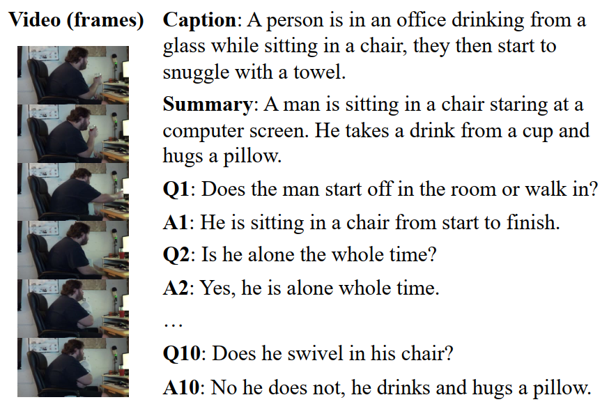 |
This paper empirically revisits the AVSD task and argues that this task exhibits a variety of biases in terms of models, dataset, and evaluation metrics. |
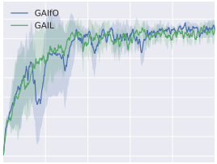 |
In contrast to previous studies, this paper first proves that LfO is almost equivalent to LfD in the deterministic robot environment, and more generally even in the robot environment with bounded randomness. |
 |
We propose a simple yet powerful training algorithm to improve model robustness, named Adversarial Noise Propagation (ANP), which injects noise into the hidden layers in a layer-wise manner. ANP can be implemented efficiently by exploiting the nature of the backward-forward training style. |
 |
We are the first to explain adversarial robustness for deep models from the perspective of neuron sensitivity, which is measured by neuron behavior variation intensity against benign and adversarial examples. |
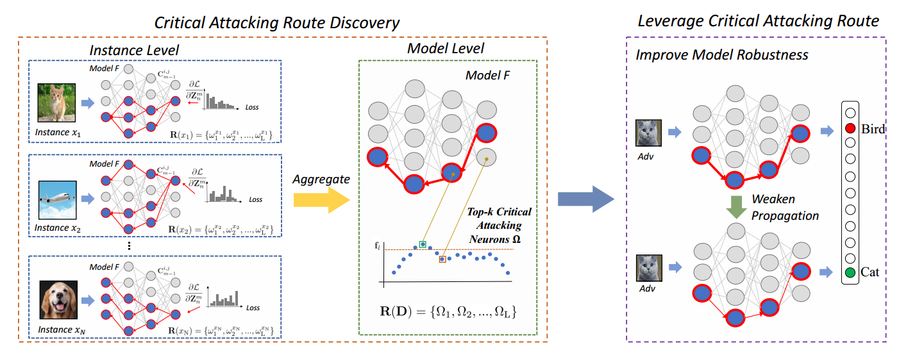 |
We try to explain adversarial robustness for deep models from a new perspective of critical attacking route, which is computed by a gradient-based influence propagation strategy. |
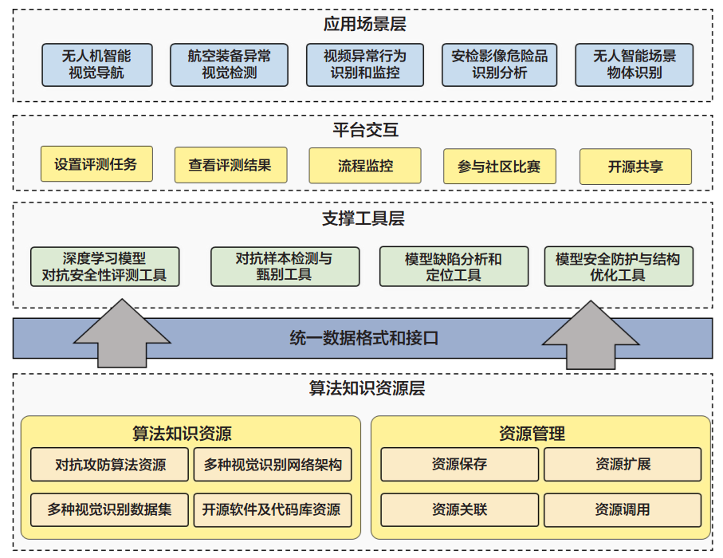 | 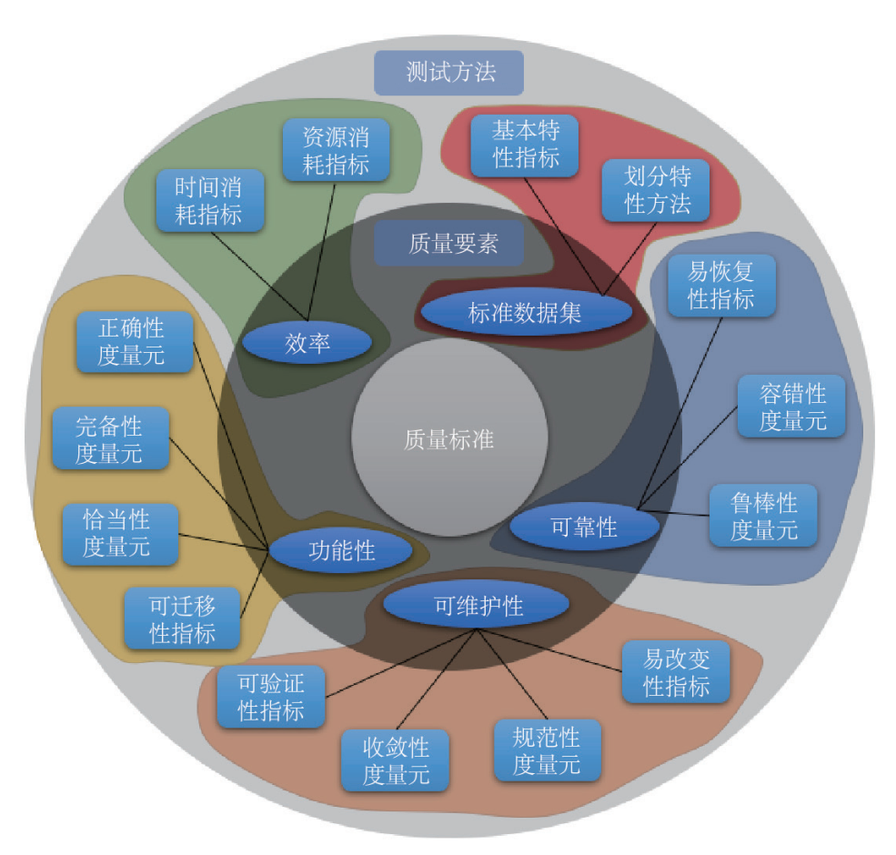 |
|
|
重明 is an open-source platform to evaluate model robustness and safety towards noises (e.g., adversarial examples, corruptions, etc.). The name is taken from the Chinese myth 重明鸟, which has strong power, could fight against beasts and avoid disasters. We hope our platform could improve the robustness of deep learning systems and help them to avoid safety-related problems. 重明 has been awarded the 首届OpenI启智社区优秀开源项目 (First OpenI Excellent Open Source Project). |
 |
RobustART is the first comprehensive Robustness investigation benchmark on large-scale dataset ImageNet regarding ARchitectural design (49 human-designed off-the-shelf architectures and 1200+ neural architecture searched networks) and Training techniques (10+ general ones e.g., extra training data, etc) towards diverse noises (adversarial, natural, and system noises). Our benchmark (including open-source toolkit, pre-trained model zoo, datasets, and analyses): (1) presents an open-source platform for conducting comprehensive evaluation on diverse robustness types; (2) provides a variety of pre-trained models with different training techniques to facilitate robustness evaluation; (3) proposes a new view to better understand the mechanism towards designing robust DNN architectures, backed up by the analysis. We will continuously contribute to building this ecosystem for the community. |
[2021.08] Co-organizer of the Workshop on 1st International Workshop on Practical Deep Learning in the Wild at AAAI 2022. [2021.08] Co-organizer of the Forum on Safety and Privacy on Pattern Recognition at PRCV 2021. [2021.08] Co-organizer of the Forum on Safety and Privacy for Multimedia Systems at ChinaMM 2021. [2021.03] Co-organizer of the Workshop on 1st International Workshop on Adversarial Learning for Multimedia at ACM MM 2021. [2020.12] Invited talk about Adversarial Machine Learning at 智东西公开课(Zhidx) [2020.11] Invited talk about Adversarial Attacks for Embodiment at CSAI, Tsinghua University, hosted by Prof. Huaping Liu. [2020.08] Invited talk about AI Safety in Automatic Check-out Scenario at 智东西公开课(Zhidx) [2020.07] Invited talk about Adversarial Machine Learning in Physical World at JD. |
[2020.12] First OpenI Excellent Open Source Project (Nationwide 7) [2019.05] Tencent Rhino-Bird Elite Training Program (Nationwide 56) [2016.01] Outstanding Graduate Award, Beihang University [2013.06] Outstanding Graduate Award, Beijing [2012.10] CCF National Outstanding Undergraduate, China Computer Federation (Nationwide 100) [2012.06] Google Excellence Scholarship, Google (Nationwide 100) |
|
|
Last update: 2022.11 |